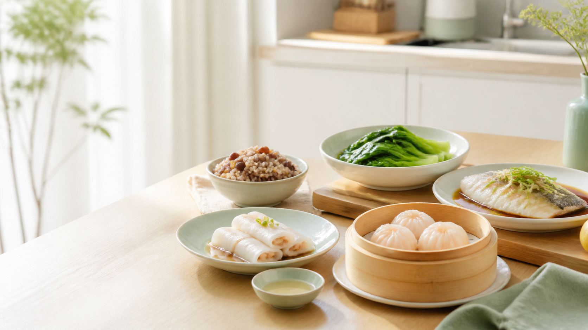
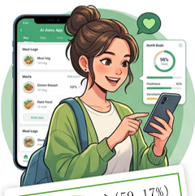

本土化识别、分级付费、分层运营与生态协同，分别对应技术、商业、产品和应用场景问题。

三项核心建议解决直接痛点，再由生态协同补足长期落地条件。
基于1248份样本的K-means聚类分析，平均轮廓系数0.376，聚类效果稳健
积极拥趸型与理性观望型各约四成，冷漠怀疑型约两成。策略重点因此不是“一套方案覆盖所有人”。

在感知有用性、感知易用性、信任、情感价值、付费意愿五个维度评分均最高。 他们已经跨过认知门槛，把AI膳食管理视为生活方式的一部分。
各维度评分处于中等水平，对AI膳食应用持理性观望态度。 他们是市场渗透广度的关键。赢得这一人群的信任，才能扩大市场覆盖。
对AI膳食管理了解程度低，信任评分与付费意愿均偏低。 短期内难以转化，但可作为品牌长期渗透的对象。
聚类结果用于运营洞察，不虚构未经报告验证的自动分类阈值
| 规则条件 | 分类结果 | 触达策略 |
|---|---|---|
| 信任与感知易用性较高 | 积极拥趸型 | 直推付费方案 + VIP社群 |
| 信任与AI了解程度较低 | 冷漠怀疑型 | 科普内容 + 免费工具体验 |
| 其余 | 理性观望型 | 7天试用 + 权威背书内容 |
企业、用户、政府共同推动行业向专业化、智能化、普惠化迈进
本土化识别 + 分层运营 + 分级付费，破解"识别不准、广告泛滥、功能同质化"三大痛点，重建用户信任。
从免费体验到付费订阅，从被动记录到主动健康管理，享受AI带来的科学膳食决策支持。
完善AI膳食识别标准与分级监管机制，推动健康城市与智慧湾区建设，让技术普惠更广人群。